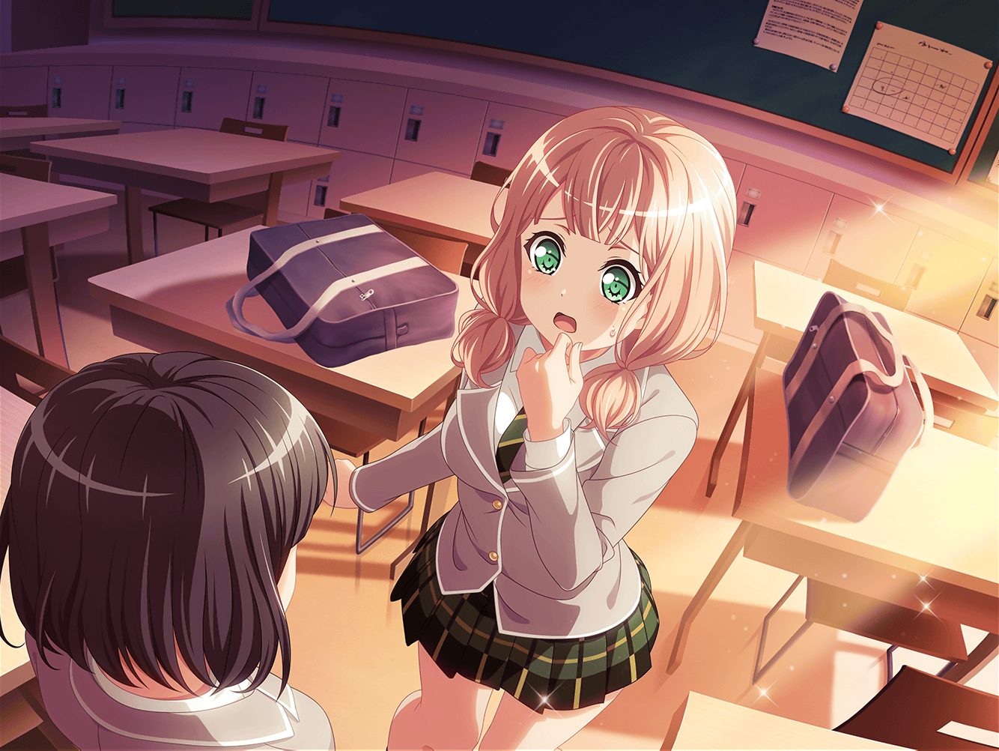

数日後
放課後
羽丘女子学園 1-A教室
ひまり
あ、蘭〜！
蘭
あれ、みんな……どうしたの？
巴
今日、これからスタジオ行かないか？
蘭
え……けど、今日は練習休みのはずじゃ
つぐみ
そうだったんだけど、もし時間があえばと思って。
新曲のことも、蘭ちゃんばっかりに任せてるのもよくないから
私達も手伝いたいなって
蘭
あ……
モカ
蘭、都合悪いかんじ？
蘭
ごめん……今日、練習ないと思ってたから
華道の集まりに行くことにしてて……
スケジュールにも入れといたんだけど……
巴
あ……
ひまり
か、歌詞！ あの、歌詞のこと一緒に考えたくて！
じゃあ、明日は？ ううん、このあと５分でもいいから！
つぐみ
ひまりちゃん……
蘭
ごめん、急ぐから……
歌詞、もう少しだけあたしの中でイメージを
かためておきたいんだ。そのあとみんなに――
ひまり
……蘭、変わったよね
蘭
変わった……？
ひまり
最近の蘭、なんかヘンだよ。
歌詞のこともだし、なんか色々……
巴
アタシも蘭のこと、心配だよ。
どうしたんだよ、最近
蘭
……変わった。あたしは、変わったよ
ひまり
えっ……
蘭
変わったよ。
みんなといつも通り一緒にいたいから。
バンド……続けたかったから！
蘭
父さんと向き合って、華道と向き合って……変わった！
みんなとの事が変わらないように、変わったんだよ！！

ひまり
……っ！
蘭
変わらないほうがよかった！？
昔みたいに、家から逃げるために
バンドをやってるほうが、よかった！？
ひまり
ご、誤解だよ、蘭！
私……
蘭
みんなと一緒にいたいだけなのに……
どうして……どうしてそんなこと言うの？
蘭
なんで……っ……
ひまり
……ごめん。ごめんね、蘭
蘭
……っ
つぐみ
あっ！ 蘭ちゃんっ
モカ
……
ひまり
私……なんであんなこと言っちゃったんだろう……
ううっ……うっ……
つぐみ
蘭ちゃんのこと、追いかけなくちゃ……！
モカ
ううん。お花の集まりって言ってたし
今は追いかけないほうがいいよ
つぐみ
そっか……
モカ
追いかけても、多分追いつかないだろうしね
ひまり
どうしよう……私、どうしたらいいんだろう……
巴
……
モカ
（なんであたし……気づいてたのに言えなかったんだろう。
蘭が、変わってたこと……
なんで今、追いかけるのをやめたんだろう）
モカ
（もしかすると……怖かったのかな）
モカ
……どうしたらいいんだろうね、あたし達